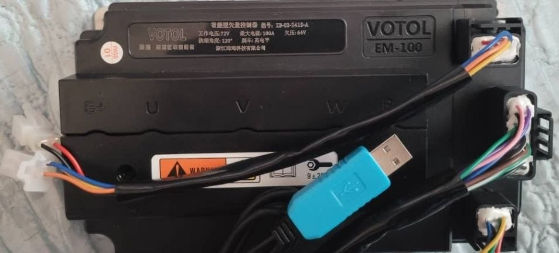

¿Qué es un controlador VOTOL?
Los controladores VOTOL son dispositivos de gestión electrónica diseñados para motores eléctricos brushless (sin escobillas) de corriente continua. Son fabricados por la empresa china Kelly Controls y se han convertido en una de las opciones más populares entre los entusiastas de las motos eléctricas por su relación calidad-precio, su versatilidad y su capacidad de programación mediante software.
Un controlador VOTOL actúa como el "cerebro" del sistema eléctrico: regula la corriente que llega al motor, gestiona el acelerador, el freno regenerativo, la temperatura y la comunicación con el display o BMS (Battery Management System).
Principales ventajas
- Programación completa mediante software (VOTOL PC Software).
- Compatibilidad con sensores Hall y sensores de tipo encoder.
- Freno regenerativo configurable.
- Protecciones contra sobretemperatura, sobrecorriente y subtensión.
- Comunicación CAN y UART para integración con displays.
- Precio competitivo frente a otras marcas como Sabvoton o Kelly.
Modelos más populares
VOTOL ofrece varias gamas de controladores según la potencia y el voltaje de trabajo. Estos son los modelos más utilizados en el mundo de las motos eléctricas:
VOTOL EM-50
Controlador de entrada, ideal para motos eléctricas de baja potencia (hasta 2000 W). Voltaje de trabajo: 48 V a 72 V. Corriente nominal: 50 A. Perfecto para scooters urbanos y bicicletas eléctricas de alto rendimiento.

VOTOL EM-100
El más popular de la gama. Soporta potencias de hasta 3000 W y voltajes de 48 V a 96 V. Corriente nominal: 100 A. Muy utilizado en motos tipo enduro y super motard eléctricas.

VOTOL EM-150
Gama alta para proyectos de alto rendimiento. Hasta 5000 W de potencia, voltajes de 72 V a 120 V y 150 A de corriente nominal. Requiere refrigeración adicional y se usa en motos de competición o conversiones de motos de combustión.

>
Compartivas de modelos de VOTOL
La siguiente tabla resume las características técnicas más relevantes de cada modelo:
| Modelo | Voltaje | Corriente nominal | Potencia máxima | Uso recomendado |
|---|---|---|---|---|
| EM-50 | 48 V – 72 V | 50 A | 2000 W | Scooters urbanos |
| EM-100 | 48 V – 96 V | 100 A | 3000 W | Motos enduro / supermotard |
| EM-150 | 72 V – 120 V | 150 A | 5000 W | Competición y conversiones |
>
Configuración y programación:
Uno de los grandes atractivos de los controladores VOTOL es su software de programación para PC, que permite ajustar prácticamente todos los parámetros del sistema. Los pasos básicos son:
- Descargar el software oficial VOTOL PC Software (versión compatible con tu modelo).
- Conectar el controlador al PC mediante un cable USB-TTL (generalmente con chip CH340 o FTDI).
- Abrir el software y seleccionar el puerto COM correspondiente.
- Leer los parámetros actuales del controlador.
- Ajustar los valores de corriente, voltaje, freno regenerativo, etc.
- Guardar los cambios en la memoria del controlador.
Parámetros más importantes:
- Corriente máxima (A): limita la potencia entregada al motor.
- Voltaje de corte bajo: protege la batería de descargas profundas.
- Freno regenerativo: recupera energía al frenar.
- Velocidad máxima: limita las RPM del motor.
- Tipo de sensor: Hall o encoder, según el motor.
Consejo: antes de modificar parámetros, guarda una copia de la configuración original. Un ajuste incorrecto puede dañar el motor o el propio controlador.
Contacto
¿Tienes dudas sobre tu controlador VOTOL? ¿Quieres compartir tu experiencia o pedir ayuda con la configuración? Escríbeme: